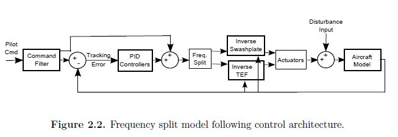

Project Overview
During my internship at the NASA Ames Research Center, I began to study the control of helicopters with trailing-edge flaps. These flap mechanisms have been successfully demonstrated on helicopters such as the Kaman helicopters. The flaps have undergone several full scale wind tunnel tests, including tests for vibration control such as the test for the SMART rotor seen in the above image. Trailing edge flaps were originally studied for use in vibration control using methods similar to individual blade control (IBC) and higher harmonic control (HHC). After completing my internship, I continued to work on studying controllers for these types of aircraft as an undergraduate research project which culminated in my undergraduate honors thesis.
 The full details are available in my undergraduate thesis: "A Control Allocation Method for a Helicopter with On-Blade Control"
The full details are available in my undergraduate thesis: "A Control Allocation Method for a Helicopter with On-Blade Control"
Using Flaps for Primary Control
My results were all performed on a simulation model of a generlized helicopter. The aircraft model used for control development is a linearized model derived from the nonlinear GENHEL (General Helicopter) flight dynamic simulation code which includes dynamics for the trailing edge flap models. This simulation code was originally developed by Sikorsky Aircraft, with extensive models including the aerodynamics of the main rotor, fuselage, and tail rotor. In order to use linear control methods, linear models are derived from the full GENHEL nonlinear model. The model has been linearized in hover for the purpose of the control development in the project. There are 28 states in the linear model which include vehicle, rotor, and engine dynamics. For the model inversion required by the model following controller, the linear model is reduced to 3 states, which are the vehicle angular rates.
Frequency Split Control Allocation
I focused on testing a frequency split allocation method which distributed the high frequency commands to the trailing edge flaps and low frequency commands to the swashplate, resulting in the correct overall control of the helicopter. This frequency split is accomplished using a first order high and low pass filter: $$\text{high pass:}\hspace{.25in} \frac{\tau s}{\tau s+1}$$ $$\text{low pass:}\hspace{.25in} \frac{1}{\tau s+1}$$ The time constant, $\tau$, serves as the frequency splitting threshold which is used to control the amount of control given to the trailing edge flaps. From the time constant, the cutoff frequency can be calculated as: $$f_c=\frac{1}{2\pi\tau}$$ For the shared control between the trailing edge flaps and swashplate, the low frequency spectrum of command was sent to the swashplate inputs, $\delta_{lat}$, $\delta_{long}$, and the high frequency command was sent the trailing edge flap inputs, $\delta_{1c}$, $\delta_{1s}$. Since the pedal command is primarily given by the tail rotor, the sum of the low pass and high pass inputs were passed to the pedal input.

Project Results
After analyzing the results from both the linear simulations and the full piloted flight simulation, the results showed that the range of response of the trailing edge flaps at a high frequency was limited in scope. The flaps do compensate for some of the control of the aircraft in degraded conditions; however, the actuators reach their travel limits before significant benefit is realized. Though the control method was very limited with the current system and actuator models, further developments in the trailing edge flap models could eventually increase the benefit of control sharing with greater control authority and travel in the flaps.